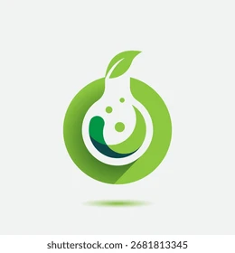

Viver com Saúde
Uma vida Saudável começa com pequenas atitudes
Atendimento médico especializado e nutricional para sua saúde e bem-estar
Atendimento médico especializado e nutricional para sua saúde e bem-estar
Consultas médicas especializadas para prevenção e tratamento de doenças.
Acompanhamento nutricional personalizado para uma vida equilibrada e saudável.

Exames laboratoriais para diagnose e acompanhamento a sua saúde.

Exames de imagem para avaliações detalhadas e auxiliar no diagnóstico preciso.
Drº. Marcos Bortoletto
Médico Clínico Geral
Drº. João Gabriel Araújo
Nutricionista
Drª. Ana Beatriz Teixeira
Cardiologista